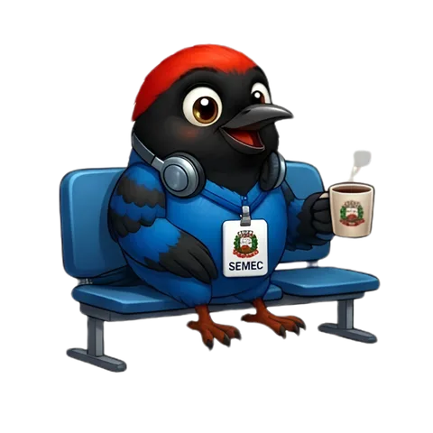

Eventos em Destaque

Em breveAqui vão aparecer os eventos abertos ao público.
Portal Institucional
A SEMEC Tangará da Serra trabalha todos os dias para promover uma educação pública de qualidade, inclusiva e conectada com a nossa comunidade.

Em breveAqui vão aparecer os eventos abertos ao público.
Valide certificados emitidos pela SEMEC de forma rápida e segura.
Validar CertificadoAqui vão aparecer as notícias da Rede Municipal de Ensino.
O Portal SEMEC organiza formações, encontros, eventos, certificados e ações que fortalecem a prática educativa na Rede Municipal de Ensino.